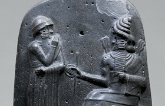

Lezione 2  Le antiche civiltà del Mediterraneo
Le antiche civiltà del Mediterraneo

Il codice di Hammurabi è un codice di 282 leggi scolpite su diorite, una roccia molto resistente, intorno al 1770 a.C.
Esso è considerato un reperto preziosissimo per diversi motivi: è uno dei più antichi codici legislativi scritti giunti fino a noi; è il primo codice che fu esposto pubblicamente, introducendo così il principio di presunzione di conoscenza della legge; essendo le sentenze che lo compongono molto dettagliate, è stato possibile per gli storici apprendere da esse molte informazioni sulla cultura, sulla vita del tempo e sull'ordinamento politico dell'Impero babilonese.
Anche se è ricordato per l'applicazione della legge del taglione, ovvero il principio della pena proporzionata al delitto, in realtà è stato uno dei primi esempi ad ammettere l'estinzione di certe pene tramite una sanzione pecuniaria. A determinare questa possibilità era, più che la natura della pena, soprattutto la posizione sociale del colpevole: se era awilum (nobile), muskenum (suddito) o wardum (schiavo). Ecco alcuni esempi di sentenze, da cui emerge nettamente tutto ciò:
«Se un uomo libero cava un occhio ad un altro uomo libero, gli si dovrà cavare un occhio.
Se un uomo libero cava un occhio ad un uomo povero, pagherà una tassa.
Se un uomo libero farà cadere un dente ad un uomo libero, si farà cadere il suo dente.
Se un uomo libero farà cadere un dente ad uno schiavo, pagherà una multa».